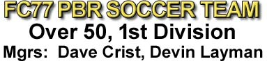
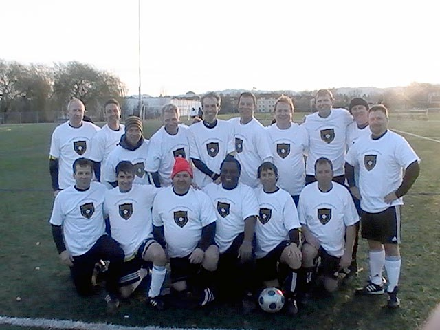

|
  |
|
Fall 2010, Over 40s 1st Division Champions - FC77 PBR Standing, left to Right: Greg Newman, Joel Dille, Bob Nichols, John Dragelin, Dave Crist, Ren Santa, Dave Moore, Kirk Newgard, Glenn Siegel, Bryan Edwards Kneeling: Mark Treick, Pat Kirk, Tim Merck, Anthony (AJ) Jackson, John Mendola, Pete Dodd Missing from Picture: John McPartland, Matt Pearson, Steve Smidt, Greg Freuler, Dain Grindle |
|
|
|
April, 2013 - Last Call briefly replaces PBR as the team's name. Playoff Match 12/05/10 - Pictures Here
Great Game By All Fellow teammates: After all you youngsters had to rush home to for your curfews, in the spirit of camaraderie and sportsmanship, I went and found the Griffins team (who I was pretty certain would be over at Pizza Mia nursing their wounds and commiserating). You boys will come to understand this sort of thing as you get older and more experienced. Anyway, they took the whipping (we put on them), with a decent amount of class. There weren’t any excuses or grumbling or complaints about the referee, the field, the weather, or our tactics. They know they had their full team at the field on time with substitutes. Ricky said that we clearly wanted to win more than they did and that they basically never really had a chance to win based on how well and how hard we played the whole game. I represented our team well by staying until the last drink was drunk and I, of course, was the last one to leave. This may be the first game since we beat the Internationals, 2-0 a few years ago (when Rich Clooten changed fields on us trying to get a win by forfeit) when I honestly can’t think of a single thing or person to complain about. Maybe I should add the two times we beat Kell’s as some of our all-time great games too. However, as Jorge would say “It matter’s not!” Starting at the back, Kevin had a very solid game in goal. His punts and throws were very good. He had good distance on his kicks and good accuracy on his throws. He didn’t drop any balls for them to pounce on and did a good job calling for the ball or telling guys to clear it themselves. He didn’t have to make a lot of spectacular saves but, his good positioning allowed him to easily cover those few shots they actually got on goal. Next, you’ve got to give it up for the defense. Beginning with the excellent job Dave C. did marking their premier midfielder out of the game. Without their playmaker, all they could do was rely on kick and run tactics and hoping we made mistakes to give them good opportunities to finish. They didn’t get much because we defenders were marking, staying with our marks and allowing Dave M. to float. He rarely had to mark anyone. Dave M. was good in getting the defense out of our zone on counterattacks and I don’t remember him misplaying any balls where he was the last defender. Dave and I and Kirk (when he was in there) did a good job communicating the defensive assignments with the rest of the team and all defenders did a good job of breaking up attempted passes or plays (by them) and making good accurate passes to our open players or safely clearing the ball out of dangerous areas. Defenders weren’t playing around with the ball yesterday and losing it, getting it taken from us or passing it directly to one of their players. Defenders also weren’t getting caught up in offense so that their counterattacks had superior numbers against us. I don’t think they were able to counter attack against us with superior numbers all game. The outside defenders did a great job not getting beat and making them have to make good plays and filling in the zones of space when they didn’t have a man to cover. Easily the best job of the year. Our midfielders were magnificent too. They supported our attacks and counter attacks, which they always do but, most importantly, they didn’t dribble too much, didn’t get caught up front out of position, played with a lot of effort and passion, challenged for about every loose ball and header, picked up the extra players the Griffins sent thru, made good accurate passes to forwards for chances and played good field balance. The Griffins rarely got a ball where one of our players wasn’t immediately there challenging them. It was great to see. Finally, last but certainly not least, how about our goal scorers and front line players? We seemed to get about the same number of chances that we usually get but, our passes in the final third of the field were terrific and our shots on goal and finishing were outstanding. We had a couple of headers that were well hit but, just wide of the post. Plus, we had a couple of shots where the goalie was beat but, their post made the save. We easily could have had six or seven goals yesterday. So, again I say great job everyone and if we continue to play like this, I like our chances the rest of the session. Anthony Jackson (AJ) Goal Of The Year We played a very strong Aloha Utd team.
They gave us trouble in Week 3 when they showed up with 8 guys. This
time they showed up with all 11. They had no weak players on the field
and they all moved the ball extremely well. It took exceptional defending
on our part to limit them to 4 goals. Haunting Match With FC
Swoosh We lost to FC Swoosh 1-0. They beat
us in week 1 by a score of 6-2, so this was a very good improvement.
We were out on Delta #3 and the field conditions were very sloppy. I
think we played our best in the first half and created a number of decent
opportunities. However, in the second half Swoosh came out very determined
and put us on our heels. They were able to maintain this pressure for
the entire second half. Moon & Sixpence
Receives A Hiding Two views of Sunday's game: "We definitely had our best outing of the year. We finally beat a team with 11 players. We played Moon and Sixpence - the toughest and worst team in our division. The one sure thing about playing Moon and Sixpence is that you will be hit hard and there will be yellow cards. We had 12 guys checked in by kickoff and 15 guys by half-time. We scored first with a quick double cross that left Johnny wide open for a header in front of the net. We missed on several more excellent chance, including one where on a corner kick one of their post defenders reached up with his elbow to block the shot from crossing the line. Incredible the ref didn't see it. He had been calling a decent game too. Moon and Sixpence equalized before half-time on a corner kick deflection to the top of the box. In the scramble one of their guys kicked the ball through two sets of legs to score. Our extra subs really paid off in the second half. As they began to tire we started to completely dominate possession. Each team got refocused on their priorities. We started scoring goals and they starting hammering us with cleats up tackles. Final tally 5-1. Both teams went away happy. We got a win with a lot of goals and they got a ref who let them tackle hard for only the cost of one yellow card." Kirk "A fine synopsis from Manager Kirk. However, I detected a glaring personal omission from his match report recap. As best I remember it, it went something like this... It was quite late in the match. A game, I might add, that was decidedly well in hand. This was a rare case of an @$$ whuppin by the good ol' boys of FC77 (PBR) O/30's over the ruffians with the limey accents of Moon & Sixpence infamy. Though the majority of play was in the evil empire's half of the field, they occasionally would mount a counter-attack. This incident occurred during one such "mounting". An appropriate wording choice, if I say so myself, because it now affords me the opportunity to segue into another redundant comment. Y'all shoulda been there to see this masterpiece because we were really stickin' it to dem dirty b@$t@rd$ that day! Ok, now back to our story...The bad guys had launched an all out offensive against us. After all, they were down several goals, had no chance to win, the game was close to the end and they had nothing to lose by attempting to make the final score look a little more respectable. Coincidently, we had decided to send about eight or nine of our men forward on a quest for personal glory, redemption and to add to our opponents humiliation. I myself was on the sidelines resting and looking for the liquid refreshment that would tide me over until I began my long trek to Alberta park for my second game of the day.' 'But I digress, which appears to be my literary style. So, the blokes had pushed a long ball forward and had about a five on three break that culminated in a two on one break in the penalty box right around the penalty spot. Our lone defender, battling mightily against overwhelming odds in a desperate situation where there was no room for error, was none other than our esteemed Manager Mr. Kirk Newgard. I must admit, a few of us had mentally calculated the odds and already conceded the likely outcome. But no! I witnessed a feat on the field of play that day that I'll never forget and mind you laddies I've been playing with the spotted ball for over three decades. The ball appeared to be floating into the crowd of the two gorillas and our Herculean hero, who were all fighting for it. For those of you who've ever played against Moon & Sixpence, you'll know that when I say fighting for it I mean they literally kick, punch, elbow, push, hit, trip, bite, claw and scratch. Then they tell you to "get up mate and quit being a pu$$!" Anyway, the lean mean fighting machine that he is, Kirk managed to get control of the ball from the two heathens. Then, in what seemed like a slow motion replay of a Wide World of Sports clip, he started juggling the ball. In what could only be described as extreme confidence, he first juggled one way, then the other, using both of his feet and his head. After toying with them, thoroughly frustrating the two mad dogs trying to get the ball from him, Kirk then looked for an outlet. All the while he was totally under control and showing off the masterful skills he has acquired from his many years of playing the sport. After realizing that he had no outlet to either side and not wanting to put our keeper in jeopardy, he spun and in one motion kicked a high arching ball clearance, not over the end line as that would have been too pedestrian for this man; No, he cleared it over the sideline as this was the safest play that could be made in this predicament. Then standing alone on the penalty spot, our hero triumphantly raised both of his arms over his head to celebrate the glorious occasion! It was a magical moment! You all should have been there! No additional offensive attacks were even attempted by the "moonies" after that!" *AJ* |